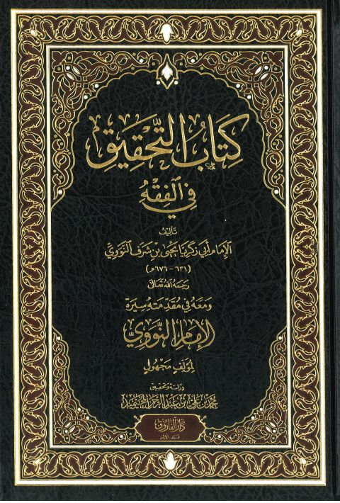

Downloads need an internet connection.
كتاب التحقيق في الفقه وفي مقدمته سيرة الإمام النووي
Authors: يحيى بن شرف النووي
Editors: محمد بن علي عبد الرحمن المحيميد
Publishers: دار الفاروق بعمان
▫️ العنوان: كتاب التحقيق في الفقه وفي مقدمته سيرة الإمام النووي ▪️ المؤلف: #يحيى_بن_شرف_النووي ▫️ المحقق: #محمد_بن_علي_عبد_الرحمن_المحيميد ▪️ الناشر: #دار_الفاروق ▫️ تاريخ النشر: 1443هـ 2022م ▪️ بلد النشر: عمان، #الأردن ▫️ الطبعة: 1 ▪️ عدد الأجزاء: 1 ▫️ الصفحات: 437 ▪️ نوع الوعاء: #كتاب ▫️ التصنيف الرئيسي: #الفقه_وأصوله ۪